Free to create, free to sell
ISC licensed code and liberally licensed dependencies. Ship closed or open, sell what you build and keep what you earn. No fees, no royalties, no one to report to.
YUP fuses a complete audio stack with a modern GPU renderer in one C++20 codebase. Build native applications, audio tools and plugins for desktop, mobile and the web, on permissive foundations that keep your work yours.
Run live opens the YDSP Synth Lab in your browser. Play it with your computer keyboard or a MIDI controller, then edit a patch and hear it recompile.
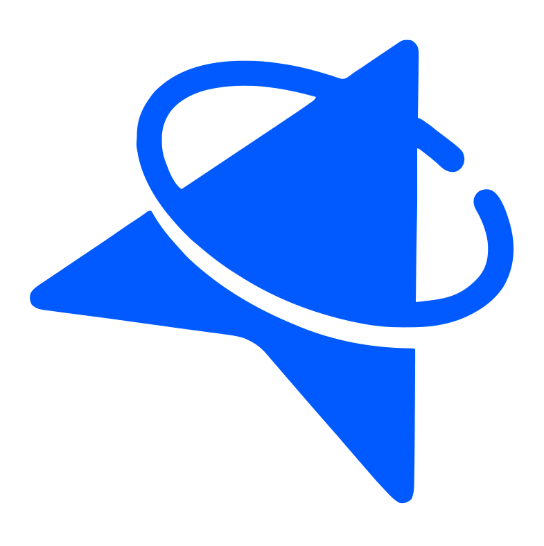
YUP! prism spectral synth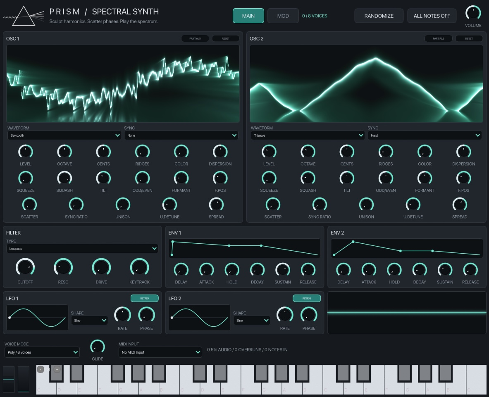
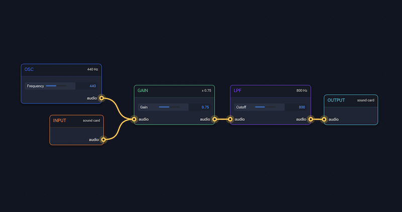
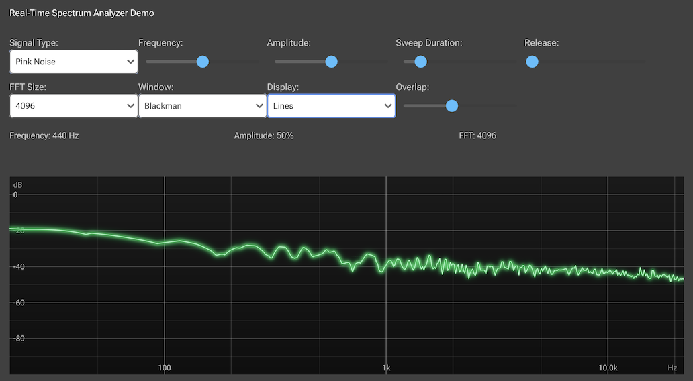
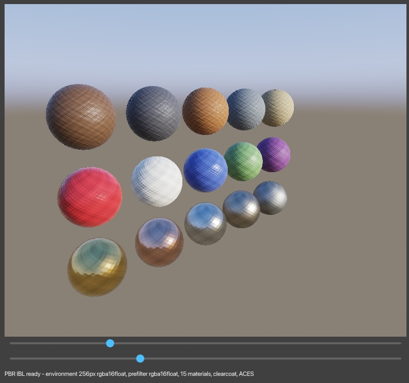
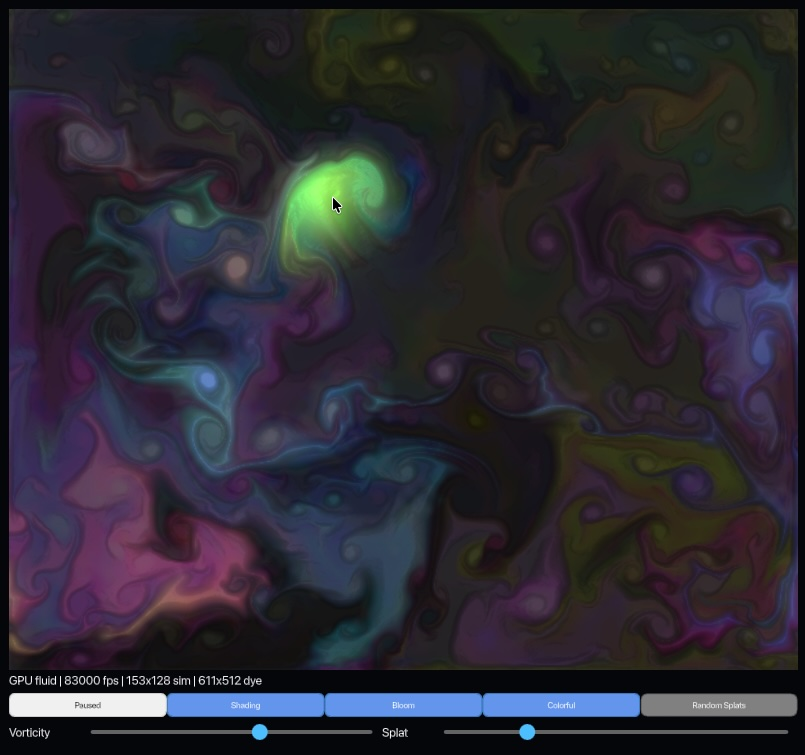
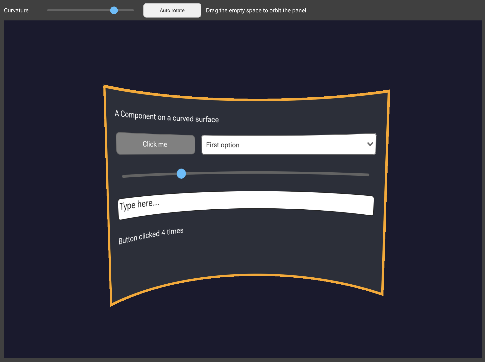
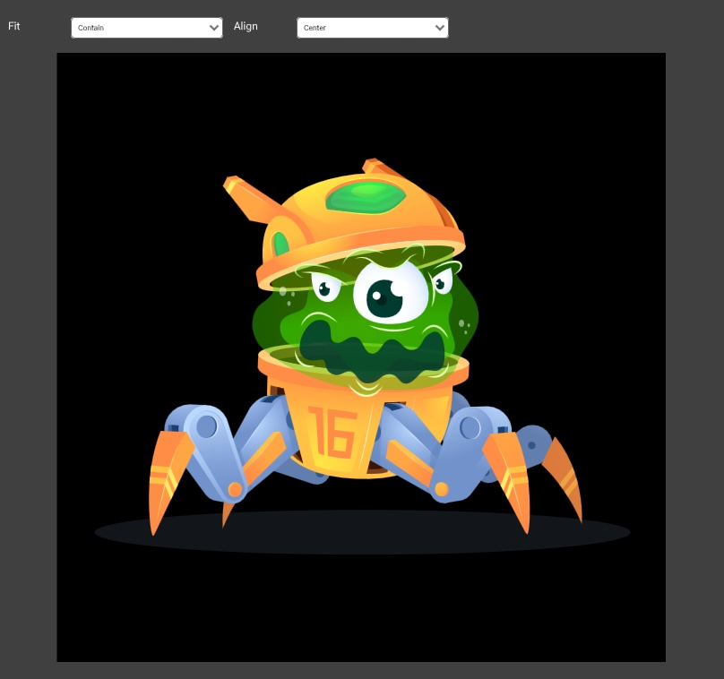
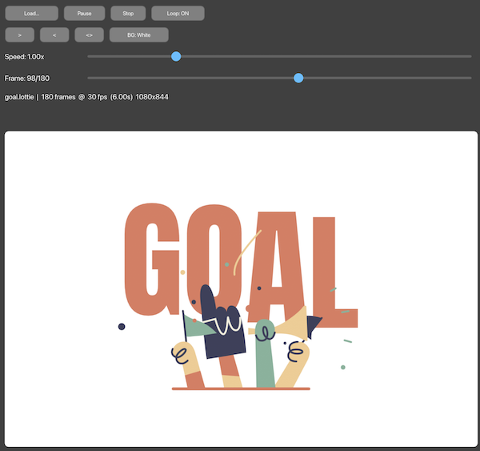
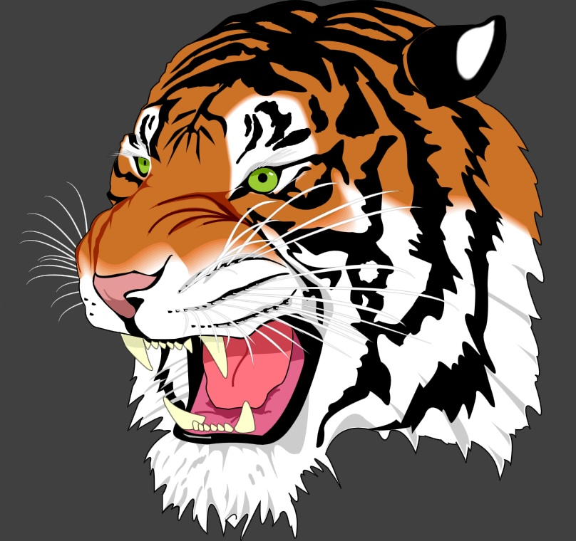
One codebase, every platform
Why YUP
ISC licensed code and liberally licensed dependencies. Ship closed or open, sell what you build and keep what you earn. No fees, no royalties, no one to report to.
Every pixel goes through the GPU from day one: vector graphics on the Rive renderer over Metal, Direct3D, OpenGL, WebGL and WebGPU, plus a low-level RHI for compute and custom shaders.
Devices, MIDI, file formats, DSP, an audio graph, plugin hosting and plugin wrappers, living in the same framework as the graphics they drive.
C++20 and the standard library throughout, with frequent iterations and an API that evolves alongside the platforms it runs on.
Plain CMake, open plugin standards like CLAP alongside VST3 and AU, and no accounts, license keys or proprietary tooling. Your code goes wherever you take it.
The roadmap is planned in public on GitHub Discussions. Ideas, issues and pull requests decide what ships next.
What's inside
Depend on exactly the modules you need. Transitive dependencies are pulled in by the CMake API.
yup_graphics · yup_rhi · yup_shading
2D drawing, fonts with variable axes, SVG and Lottie on top of Rive. Drop down to the RHI for compute and render pipelines, render 3D into components or map live components onto 3D surfaces. Write shaders once: a cross-platform transpiler and the .ysl bundle format compile them for every backend, offline or at runtime.
yup_gui
Components, windowing, layout, text editing, popup menus, drag and drop, multitouch and 3D components, all painted on the GPU.
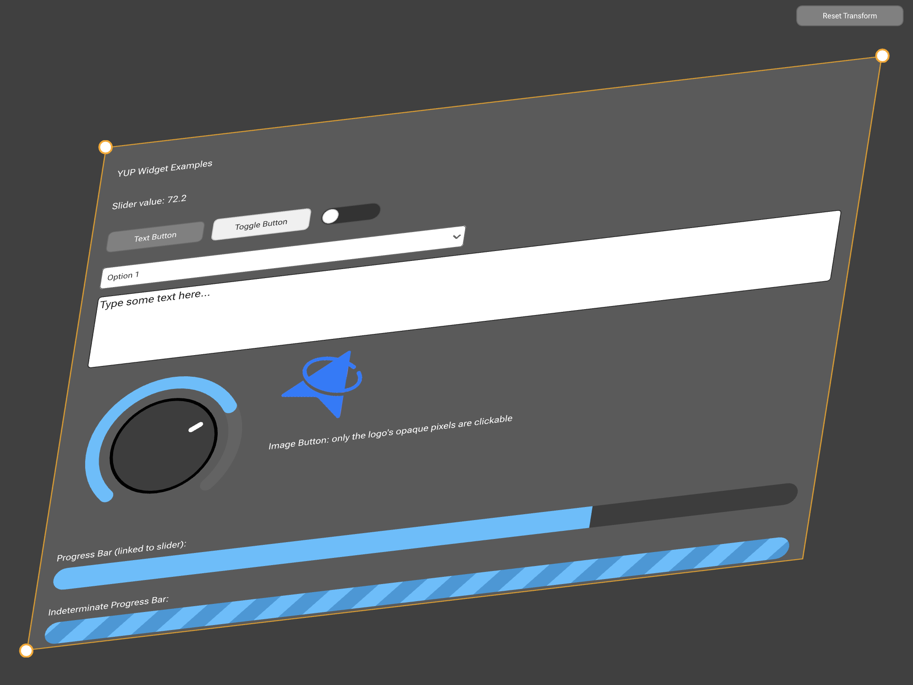
yup_dsp · yup_dsp_jit
Filters and designers, crossovers, FFTs, dynamics, convolution and resampling. YDSP adds a realtime JIT-compiled DSP language.
yup_audio_graph
A node-based graph of audio processors for routing audio and MIDI, with an editor you can see in the examples.
yup_audio_plugin_*
Wrap your processor as CLAP, VST3, AU or a standalone app, and host third-party plugins in-process.
yup_python
Create and drive YUP applications from scripts, install the wheel and iterate without recompiling.
yup_ai
Chat-completion clients for OpenAI, Anthropic and Gemini, function-calling tools, embeddings and an MCP client and server.
Backends
Each platform uses its own graphics and audio APIs. Dashed items are in progress.
Developer experience
Fetch YUP with CMake, pick your modules, write your application class. The same target builds for desktop, mobile and the browser.
FetchContentPick your path
No tiers, no seats, no revenue caps, no royalties. One ISC license covers apps, plugins and the web, and what you build is yours to sell.
Native desktop and mobile apps.
Free ISC
yup_standalone_app CMake targetInstruments and effects for any DAW.
Free ISC
yup_audio_plugin CMake targetThe same app, running in the browser.
Free ISC
FAQ
Anything else? Ask on Discord, start a thread in GitHub Discussions, or write to support@yup.audio for dedicated support.
YUP is early-stage and moving fast, so APIs may still change. It is already usable for experimentation, examples, prototypes and contributors comfortable with a fast-moving framework. Graphics and GUI, DSP, the audio graph and CLAP/VST3 plugins are the areas most ready for feedback.
YUP started from the ISC licensed JUCE7 modules and has since gone its own way, with its own rendering, GUI, DSP, audio graph and plugin layers. Some APIs look familiar, but do not assume they are identical.
Project code is ISC licensed: use, copy, modify, distribute and sell for any purpose, commercial or not, keeping the copyright notice. No fees, no royalties, no revenue thresholds. Dependencies are chosen for liberal licensing or public-domain availability.
You can build CLAP and VST3 on Windows and macOS, plus AUv2 and AUv3 on macOS. Hosting supports CLAP and VST3 on Windows and macOS, and AUv2 on macOS. AAX, LV2 and Linux support are in progress.
Yes. Wasm builds through Emscripten render with WebGPU or WebGL2 and play audio through AudioWorklet.
The yup_python module provides bindings for creating and driving YUP applications from scripts. Run just python_install to install the Python wheel.
Clone the repository and have a GPU-rendered audio app running in minutes. The roadmap is planned in the open, so bring your ideas, your code and your feedback.